Aquilonia
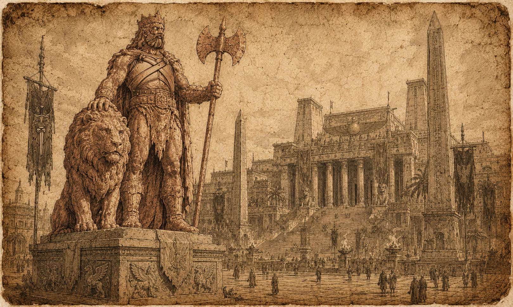
Resumo
Aquilonia e o centro do Imperio Aquilonio e a mais poderosa das nacoes do Oeste hiboriano. Seu nome ainda carrega o peso de Conan, que tomou o trono pela espada, e de Conn, que tentou transformar conquista em ordem duradoura. Suas planicies ferteis, seus rios, suas estradas e sua capital, Tarantia, fazem dela o coracao politico e economico do Imperio.
Mas o coracao perdeu o ritmo.
Conn morreu sem sucessor proclamado. O Senado debate, o Conselho dos Ancioes aconselha, as casas nobres calculam e as legioes aguardam ordens que talvez nao venham. De fora, Aquilonia ainda parece imensa. De dentro, todos sabem que a grandeza imperial repousa sobre equilibrio fraturado.
Nas fronteiras, os bossonianos mantem a linha contra os Pictos. Em Venarium, Thal-Remmon governa de fato sem ter recebido direito formal. Em Tarantia, cada decisao parece exigir mais tempo do que o mundo esta disposto a conceder.
Essencia
Aquilonia e lei, trono, estrada e espada. E tambem atraso, orgulho, memoria e medo.
Nenhuma outra nacao do Imperio concentra tanta legitimidade simbolica. Quando um emissario fala "em nome da Aquilonia", nao fala apenas por uma terra: fala pela pretensao de que o Oeste hiboriano pode ser organizado, tributado, defendido e julgado por uma ordem comum.
Essa pretensao foi primeiro imposta por Conan e depois institucionalizada por Conn. Conan tornou Aquilonia inevitavel; Conn tentou torna-la administravel.
O problema e que a Aquilonia aprendeu a depender de ambos. Primeiro do conquistador, depois do estadista. Agora, sem um e sem o outro, restam as instituicoes que Conn ergueu: Senado, Conselho dos Ancioes, legioes imperiais, Marcas e Warbarons. Elas ainda funcionam. Mas nenhuma delas, isoladamente, e capaz de substituir a Coroa.
Aquilonia nao esta em ruina. Isso a torna mais perigosa. Ela ainda tem alimento, soldados, ouro, escribas, estradas, templos e autoridade. O que falta e centro incontestavel.
Identidade Historica
A tradicao aquilonia se enxerga como culminacao civilizada do Oeste. Seus nobres falam de direito, sangue, terras antigas, juramentos e honra de linhagem. Seus oficiais falam de legioes, fronteiras, disciplina e manutencao da ordem. Seus camponeses falam de colheita, tributo, protecao e medo de que as guerras dos grandes cheguem aos campos.
Conan permanece como paradoxo fundador. Foi estrangeiro, barbaro, usurpador e rei. Sua memoria permite que Aquilonia justifique tanto a ordem quanto a violencia. Para os tradicionalistas, Conan foi excecao gloriosa, nao precedente. Para os Warbarons, foi prova de que a legitimidade pode nascer da espada quando a espada salva o reino. Para o povo, ele e lenda: o homem que podia resolver com presenca aquilo que hoje exige tres votacoes e nenhum resultado.
Conn herdou esse problema e tentou resolve-lo por instituicao. Seu reinado transformou a dominacao aquilonia em projeto imperial: assentos, pactos, garantias, direito, tributo previsivel, integracao militar e administracao das fronteiras por Marcas. A grande obra de Conn foi fazer com que o Imperio parecesse mais do que a sombra de seu pai.
Sua morte revelou que a obra ainda nao estava completa.
Posicao no Imperio
Aquilonia e o primeiro pilar do Imperio. Nemedia e o segundo. A tensao entre ambas define grande parte da politica senatorial.
Aquilonia oferece centro, coroa, legitimidade historica, capacidade agricola, rotas internas e a maioria dos simbolos imperiais. Nemedia oferece memoria rival, tradicao aristocratica propria, disciplina administrativa, erudicao politica e uma nobreza que nunca esqueceu ter enfrentado Aquilonia como igual.
No Senado, essa dualidade cria equilibrio e veneno. Os aquilonios tendem a tratar o Imperio como extensao natural da Coroa. Os nemedios tendem a trata-lo como pacto entre potencias antigas. Essa diferenca parece academica ate que se discuta tributo, sucessao, legioes ou direito de nomear Warbarons.
Corinthia, Brythunia e Hyperborea orbitam essa disputa de modos diferentes. Corinthia lucra com a estabilidade e vende saber, ciencia e intermediacao. Brythunia depende do Imperio para protecao e rotas, mas teme ser engolida por decisoes tomadas longe. Hyperborea integra-se de forma incompleta, observando se a fraqueza aquilonia torna a separacao pensavel.
Geografia e Fronteiras
No mapa imperial, Aquilonia ocupa o centro-oeste do nucleo. Tarantia fica em posicao de convergencia, com estradas e rios funcionando como veias politicas e economicas. Para o oeste e noroeste, as Bossonian Marches formam a fronteira viva contra a Pictish Wilderness. Para o norte, Gunderland e Venarium olham para a Cimmeria e para memorias antigas de guerra. Para o sul, Poitain, Argos e Zingara delimitam areas de alianca, comercio e atrito. Para o leste, Nemedia e Ophir marcam a transicao para o resto do nucleo imperial e para as ameacas do sul.
Rios importantes como o Shirki, o Khorotas, o Tybor, o Thunder e o Black River nao sao apenas acidentes geograficos. Sao linhas de abastecimento, fronteiras praticas, rotas de patrulha e argumentos em disputas de jurisdicao.
As regioes aquilonias nao sao homogeneas. Este verbete funciona como matriz do reino; os locais principais aparecem em entradas proprias para facilitar consulta e navegacao.
Cidades e regioes centrais
- Tarantia: capital, centro politico, sede do Senado, da memoria imperial e da paralisia atual.
- Tanasul: cidade de rota e conexao, importante para circulacao entre o centro e as regioes de marcha.
- Galparan: ponto interior ligado a rotas entre Gunderland, Tanasul e o coracao aquilonio.
- Shamar: marco meridional, proximo a rotas que conectam Aquilonia, Ophir e regioes do sul.
Provincias e fronteiras
- Poitain: provincia sulista de forte tradicao militar e nobreza orgulhosa.
- Gunderland: zona nortista dura, exposta a memoria de Venarium e pressao cimeria.
- Bossonian Marches: fronteira cultural e militar, mais modo de vida do que simples provincia.
- Venarium: fortaleza retomada por Thal-Remmon; hoje simbolo da periferia que age quando o centro hesita.
- Velitrium: bastiao bossoniano e guardiao pratico da fronteira ocidental.
- Karavazyan: cidade-caravana de fronteira entre Venarium, Tanasul e as Marchas; oficialmente ambigua, economicamente indispensavel e estrategicamente ligada ao avanco silencioso de Thal-Remmon.
Governo e Estrutura de Poder
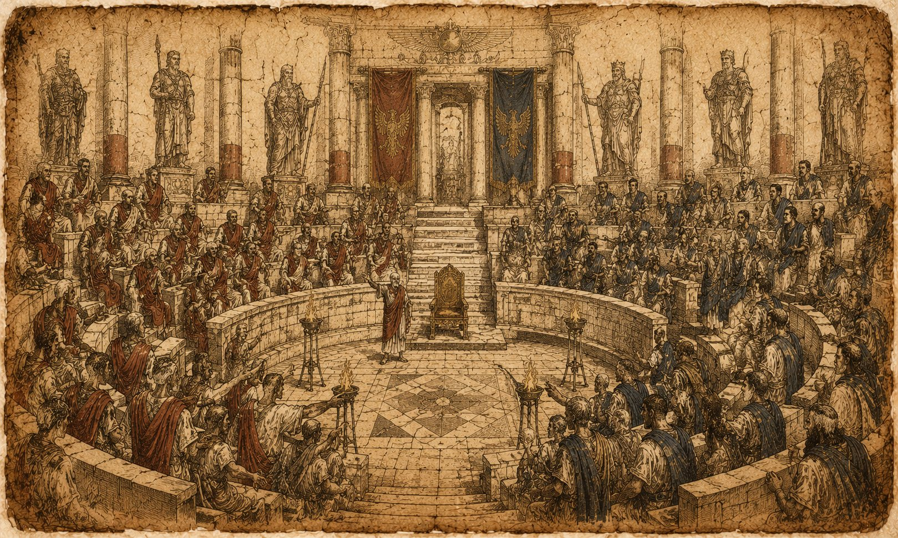
Formalmente, Aquilonia e monarquia imperial. Na pratica, durante o Ano da Coroa Quebrada, e um sistema de ausencia.
A Coroa existe como instituicao, mas nao como pessoa. O Senado existe como arena de legitimacao, mas esta dividido. O Conselho dos Ancioes existe como fonte de autoridade moral e juridica, mas nao comanda legioes. As legioes imperiais existem, mas apenas cinco respondem diretamente a Coroa. A maior parte da forca militar do Imperio esta nas Marcas, sob Warbarons.
Essa arquitetura foi criada para funcionar com um Imperador forte acima dela. Sem esse centro, cada peca interpreta sua funcao de modo conveniente.
Senado Imperial
O Senado reune nobres das casas tradicionais e delegacoes proporcionais dos territorios do nucleo imperial. Ali se discutem tributos, campanhas, leis, interpretacoes de pactos e, inevitavelmente, sucessao.
O Senado nao e inutil. Ele e lento. Sua lentidao, que em tempos de paz pode significar prudencia, agora parece incapacidade. Blocos aquilonios e nemedios disputam primazia; casas menores vendem apoio; Corinthia calcula; regioes de fronteira exigem urgencia.
Conselho dos Ancioes
O Conselho dos Ancioes e consultivo, juridico e moral. Seus membros sao juristas, sacerdotes, estadistas, veteranos e figuras de prestigio. Nao possuem forca militar propria, mas sua palavra ainda importa porque oferece legitimidade quando a lei se torna ambigua.
Em uma crise sucessoria, o Conselho pode nao decidir quem governa, mas pode decidir quem parece legitimo.
Warbarons e Marcas Imperiais
Os Warbarons foram a solucao de Conn para absorver senhores de guerra e transformar fronteiras instaveis em dominios militares reconhecidos. Cada Warbaron governa uma Marca Imperial, arrecada tributos, administra justica local, mantem fortificacoes e comanda legioes proprias em nome da Coroa.
O titulo e hereditario, mas nao automatico. O sucessor deve ser designado e confirmado. Enquanto Conn vivia, essa regra mantinha equilibrio. Com Conn morto, surge a pergunta que ninguem quer responder: quem confirma o proximo Warbaron?
O caso de Thal-Remmon torna a pergunta concreta. Ele governa Venarium de fato, comanda os Shadow Lions e foi tacitamente aceito por Conn, mas nunca recebeu investidura formal. Se exigir reconhecimento, o Senado tera de escolher entre reconhecer a forca que salvou a fronteira ou reafirmar uma lei que talvez ja nao consiga impor.
Castas, Classes e Sociedade
A sociedade aquilonia e hierarquica, mas nao simples.
A nobreza tradicional controla terras antigas, casamentos, tribunais locais e redes senatoriais. Ela se ve como guardia da civilizacao. Despreza homens novos quando eles sobem pela espada, mas depende deles quando a fronteira arde.
Os burocratas e juristas de Tarantia formam uma casta menos vistosa e mais resistente. Sao escribas, magistrados, coletores, interpretes de pacto, funcionarios de arquivo e homens capazes de atrasar uma guerra ao perder uma assinatura.
Os militares se dividem entre legioes imperiais, guarnicoes de cidade, tropas provinciais, arqueiros bossonianos e companhias de Marca. Entre eles cresce a sensacao de que Tarantia debate enquanto outros sangram.
Camponeses, artesoes e arrendatarios sustentam o peso real do Imperio. Para eles, a crise sucessoria importa quando muda o imposto, atrasa a escolta, recruta filhos ou permite que bandoleiros cruzem uma estrada antes segura.
Os bossonianos ocupam posicao singular. Sao leais, mas nao submissos. Dependem de Aquilonia e a protegem todos os dias. Na fronteira, um arqueiro bossoniano pode respeitar a Coroa e ainda assim desprezar um senador que nunca dormiu ouvindo tambores pictos.
Cultura, Saber e Costumes
A cultura aquilonia valoriza direito, propriedade, linhagem, coragem militar, juramento publico e memoria de feitos. Sua arquitetura tende a solidez: muralhas, estradas, pontes, foros, torres de vigia, templos de Mitra e saloes de audiencia.
Em Tarantia, a palavra escrita possui peso quase sagrado. Editos, genealogias, registros de tributo e sentencas moldam a realidade politica. Em fronteira, a palavra escrita continua importante, mas precisa ser acompanhada por homens armados.
O aquilonio medio confia em ordem. Isso nao significa que ele viva bem. Significa que ele teme o que existe fora dela: floresta picta, feitiçaria estigia, ambicao turania, anarquia de mercenarios, fome, estrada sem patrulha e nobre sem freio.
Em comparacao com Corinthia, Aquilonia e menos curiosa e mais juridica. Em comparacao com Nemedia, e menos memorialista e mais imperial. Em comparacao com Bossonia, e mais civil e menos fronteirica. Essas diferencas devem aparecer em NPCs.
Religiao e Cultos
Mitra e o culto publico dominante e o principal idioma religioso da legitimidade aquilonia. Seus templos oferecem ordem moral, ritos de juramento, funerais, aconselhamento a nobres e justificativa espiritual para a autoridade civilizada.
A religiao mitraica, contudo, nao e monolitica. Em Tarantia, pode ser institucional, cerimonial e proxima da lei. Nas Marchas, tende a ser mais austera, funeraria e ligada a dever. Entre soldados, Mitra e invocado menos como consolo e mais como testemunha: que veja quem manteve a linha e quem fugiu.
Cultos estrangeiros existem, mas sao vigiados. Asuranos podem ser mal compreendidos. Devotos de Ishtar ou deuses shemitas podem aparecer em bairros mercantis. Qualquer sinal de Set gera medo, repressao ou manipulacao politica.
Para o Mestre, a crise atual e terreno fertil para cultos ocultos. Quando o centro falha, homens buscam pressagios. Quando a lei demora, deuses menores oferecem respostas rapidas demais.
Economia e Recursos
Aquilonia vive de terra, rios, estrada e tributo.
Suas planicies e vales produzem graos, vinho, gado, madeira, couro e excedente alimentar. Isso sustenta cidades, legioes e burocracia. O Imperio nao seria possivel sem essa base material. Tarantia pode falar em destino, mas destino tambem precisa de celeiros.
As estradas aquilonias sao instrumento de poder. Elas movem mercadores, mensageiros, legioes, cobradores e rumores. Onde a estrada e segura, a Coroa parece presente. Onde a estrada falha, surgem Karavazyan, escoltas privadas, bandoleiros, cobrancas locais e dependencias novas.
A crise sucessoria afeta a economia por incerteza. Nao e preciso guerra aberta para ferir o comercio: basta que comerciantes nao saibam quem garante um contrato, que Warbarons cobrem taxa dupla, que senadores travem verba de guarnicao ou que um comboio precise escolher entre passar por Velitrium ou contratar Shadow Lions.
Forcas Militares
Aquilonia ainda e militarmente poderosa. Esse e o perigo.
A Coroa mantem cinco legioes imperiais diretamente subordinadas a autoridade central. Elas sao simbolo e reserva. Sua movimentacao, no entanto, tornou-se politicamente sensivel: quem ordena? Em nome de quem marcham? Contra quem podem ser usadas sem parecer golpe?
As demais forcas estao espalhadas pelas Marcas Imperiais. Na pratica, isso significa que a defesa do Imperio depende de senhores de fronteira com interesses proprios. Em paz, isso e eficiencia regional. Em crise, e fragmentacao armada.
Os bossonianos sao essenciais para a fronteira oeste. Seus arqueiros, trilheiros e guarnicoes conhecem a Wilderness melhor do que qualquer oficial de salao. Velitrium representa essa cultura em sua forma mais rigida: dever, disciplina, arco, vigilia.
Venarium representa outra possibilidade: a fronteira reorganizada por um lider carismatico e por uma companhia que responde a ele antes de responder ao Senado.
Relacoes Externas
Nemedia
Nemedia e parceira e rival. Integra o nucleo imperial, ocupa posicao central no Senado e conserva memoria de igualdade antiga. Aquilonia precisa dela para sustentar o Imperio, mas teme que a crise sucessoria permita a Nemedia redefinir o pacto em seus termos.
Corinthia
Corinthia funciona como centro cultural, cientifico e diplomatico. Aquilonia tende a valorizar sua utilidade e desconfiar de sua liberdade intelectual. Em tempos de crise, saber corinthio pode salvar o Imperio ou fornecer argumentos para seus inimigos.
Brythunia
Brythunia e zona de articulacao e dependencia. Para Aquilonia, e parte do corpo imperial; para muitos brythunios, isso pode significar protecao ou absorcao. A relacao deve ser escrita como negociacao continua, nao como posse pacifica.
Hyperborea
Hyperborea integra formalmente o Imperio de modo recente e incompleto. Aquilonia precisa demonstrar forca sem provocar ruptura. Se Tarantia parecer fraca, o silencio hyperboreo pode virar calculo separatista.
Ophir
Ophir e aliado crucial e anteparo contra Stygia. Sua riqueza e posicao estrategica fazem dele parceiro indispensavel. Se Ophir cair ou mudar de alinhamento, Aquilonia sente antes que o resto do Imperio compreenda.
Bossonian Marches
As Marches sao parte de Aquilonia, mas tambem um mundo proprio. A lealdade bossoniana nasce de utilidade, tradicao e dever, nao de docilidade. Se Tarantia abandonar a fronteira, os bossonianos farao o necessario para sobreviver.
Tensoes Atuais
Coroa vacante
Conn morreu ha dois anos. O trono permanece vazio. A sucessao, evitada nos ultimos anos de sua vida, tornou-se agora o buraco no centro da lei.
Senado paralisado
O Senado vota, adia, interpreta e bloqueia. Cada faccao teme que uma decisao apressada entregue o Imperio a um rival. Essa prudencia ja se confunde com covardia.
Warbarons sem arbitro
Os Warbarons foram criados para defender fronteiras. Agora possuem forca militar suficiente para constranger o centro. Sem Imperador, o mecanismo de sucessao e confirmacao tornou-se vulneravel.
Thal-Remmon
Thal-Remmon e o problema que ganhou rosto. Bastardo, comandante, vencedor em Venarium, senhor de fato e nao de direito. Se for reconhecido, abre precedente. Se for rejeitado, pode tornar-se bandeira para todos que creem que a fronteira vale mais do que o Senado.
Velitrium
Velitrium permanece estavel enquanto Edran Verden vive. A sucessao entre Caelan e Maeryn, a rigidez tradicional da cidade e o plano de longo prazo de Thal-Remmon tornam a fortaleza uma chave estrategica.
Karavazyan
Karavazyan cresce como instrumento sem estandarte. Ela move comercio, rumor, escolta e influencia pelas rotas onde a autoridade formal e lenta. O Senado mal percebe; Venarium percebe; Velitrium observa.
Kuth
Kuth ainda nao e uma questao publica. Isso e parte do perigo. Enquanto a politica explica tudo como sonho, supersticao, histeria ou culto menor, algo mais antigo encontra espaco nas fissuras.
Personalidades Publicas do Centro Imperial
Aquilonia nao e governada por uma unica vontade. O Trono Vazio continua sendo o simbolo da soberania, mas o poder real se distribui entre Senado, Conselho dos Ancioes, casas nobres, comando das legioes, templos de Mitra, Warbarons e burocratas de Tarantia. Essas figuras representam as classes que sustentam ou corroem o centro imperial.
- Dama Aemilia Valens: senadora aquiloniana e matriarca de uma casa antiga; defende precedencia nobre e continuidade da ordem pos-Conn.
- Marcus Valerius Corda: chanceler-arquivista do Senado; conhece decretos, genealogias e lacunas legais capazes de elevar ou destruir pretendentes.
- General Othmar de Tanasul: oficial de carreira ligado as rotas militares do centro-norte; visto como soldado institucional, nao como homem de faccao.
- Bispo Caldus Meroven: voz mitraica de grande audiencia em Tarantia; traduz crise politica em linguagem de dever, culpa e expiacao publica.
- Lysandra de Poitain: cavaleira-diplomata de uma casa meridional; representa a honra aristocratica que ainda quer salvar Aquilonia de sua propria burocracia.
NPCs e Faccoes Relevantes
Instituicoes
- Senado Imperial: arena de disputa entre casas, nacoes do nucleo e interesses de sucessao.
- Conselho dos Ancioes: fonte de legitimidade juridica e moral, especialmente perigosa se dividida.
- Legioes Imperiais da Coroa: cinco legioes centrais cuja movimentacao pode definir a crise.
- Warbarons: senhores de Marcas Imperiais, defensores necessarios e ameaca estrutural.
- Templos de Mitra: autoridade religiosa, social e legal.
Figuras e eixos ja ativos
- Thal-Remmon: senhor de fato de Venarium, comandante dos Shadow Lions, possivel ponto de ruptura do sistema.
- Edran Verden: Warbaron de Velitrium, tradicionalista e defensor pratico das Marchas.
- Caelan Verden: herdeiro designado, honrado e rigido.
- Maeryn Verden: estrategista excluida da sucessao formal por tradicao.
- Shadow Lions: companhia que transforma reputacao militar em poder politico.
- Karavazyan: cidade movel e ferramenta de influencia sem assumir forma de conquista.
- Voidwatchers: seita ou rede de observadores de sonhos, relevantes onde Kuth toca a realidade.
Tarantia
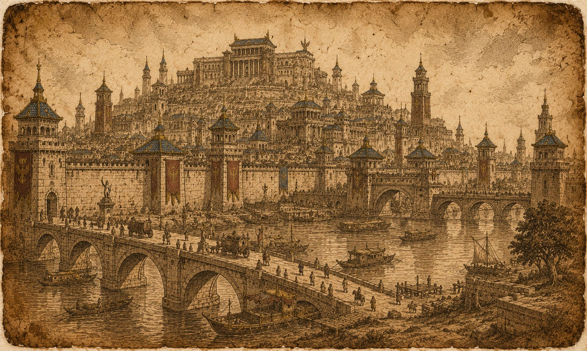
Resumo
Tarantia e a capital de Aquilonia e, no periodo atual da campanha, o lugar onde o Imperio Aquiloniano tenta convencer a si mesmo de que ainda e eterno. A cidade concentra o palacio, o Senado, as grandes casas nobres, templos de Mitra, cartorios, tribunais, academias militares, mercados de longa distancia e embaixadas das nacoes submetidas ou associadas ao Imperio.
Vista de longe, Tarantia e uma cidade de torres azuis e douradas, muralhas solidas e pontes sobre o rio Khorotas. Vista por dentro, e um organismo de pedra, protocolo, ambicao e medo: cada portao sabe quem entra, cada salao sabe quem deve esperar, cada rua sabe que uniforme deve obedecer.
Identidade
Tarantia e menos uma cidade do que uma afirmacao politica. Ela diz ao mundo que Aquilonia e a flor do Ocidente hiboriano: rica, militarmente organizada, juridicamente sofisticada e convencida de sua superioridade. Essa imagem, porem, depende de uma coreografia constante. O luxo dos palacios precisa esconder a exaustao fiscal das campanhas de fronteira; a retorica da unidade precisa esconder a rivalidade entre velhas familias; os templos precisam transformar conquista em missao civilizatoria.
A cidade e feita de contrastes fortes:
- a monumentalidade do palacio contra os becos de servico;
- a solenidade mitraica contra cultos privados de nobres ansiosos;
- a disciplina da guarda contra a corrupcao dos inspetores de bairro;
- a grandeza imperial contra a memoria incomoda de Conan, o estrangeiro que um dia reinou ali.
Geografia Urbana
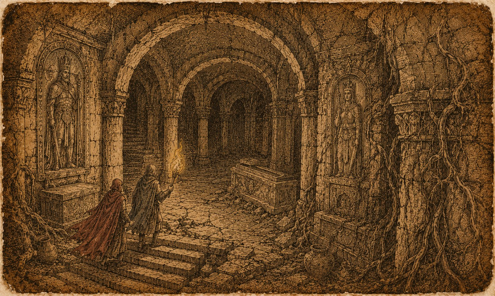
Tarantia se organiza em torno do Khorotas, das muralhas internas e das vias cerimoniais que conduzem ao palacio. A topografia politica e tao importante quanto a fisica: quanto mais alto, mais perto do poder; quanto mais perto das pontes e docas, mais misturado e perigoso se torna o fluxo social.
Distritos Principais
- Palacio e Altas Cortes: centro do poder formal; audiencias, arquivos dinasticos, conselhos militares e recepcoes senatoriais.
- Bairro Senatorial: mansoes, casas de patronato, salas de reuniao privadas e corredores onde acordos reais sao fechados antes das votacoes.
- Templos de Mitra: nucleo ritual da cidade, usado para coroacoes, penitencias publicas e legitimacao de campanhas militares.
- Mercados do Khorotas: area de comerciantes, cambistas, caravaneiros, agentes estrangeiros e rumores vindos de toda a Era Hiboriana.
- Quartel da Guarda Real: forca de ordem urbana e simbolo da continuidade aquiloniana apos a queda da velha monarquia conaniana.
- Subterraneos e Catacumbas: ruinas, necropoles e passagens esquecidas sob a cidade oficial. Otimas para segredos, perseguicoes, cultos e provas de que Tarantia foi erguida sobre camadas anteriores de poder.
Governo e Poder
No cenario de Conan Legacy, Tarantia e a sede pratica do Trono Vazio. O rei morto ainda governa por memoria, estatua, lei e medo. Nenhuma faccao quer parecer traidora da ordem que herdou, mas todas tentam moldar essa ordem para seus interesses.
Forcas centrais:
- Senado Imperial: arena de disputa entre Aquilonios, Nemedios e casas associadas. Tarantia e seu teatro principal.
- Nobreza Aquiloniana: defende precedencia historica, linhagem e direito de mando.
- Delegacoes Nemedias: pressionam por racionalizacao administrativa, codificacao legal e maior participacao no eixo imperial.
- Sacerdocio de Mitra: sustenta a linguagem moral do poder, mas nao e monolitico.
- Warbarons e generais: homens que controlam soldados e estradas, muitas vezes mais decisivos que juristas.
- Casa de Thal-Remmon: influencia crescente, baseada em disciplina militar, controle de informacao e legitimidade de fronteira.
Cultura e Vida Cotidiana
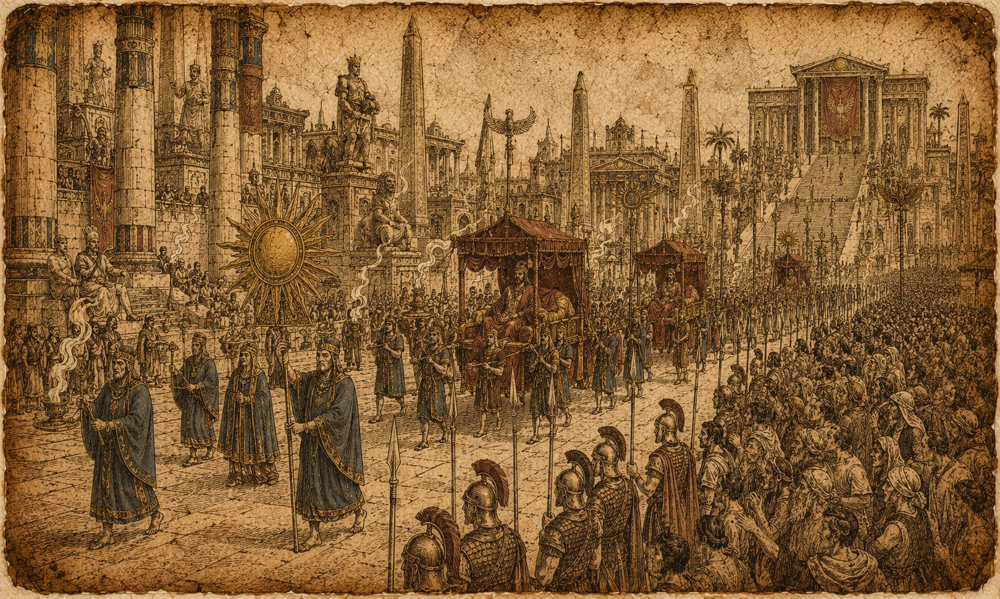
A vida cotidiana tarantina e formal, hierarquica e teatral. A posicao social aparece na roupa, na forma de falar, no direito de portar armas, no acesso a banhos, bibliotecas, jardins e tribunais. Mesmo comerciantes ricos precisam de patronos; mesmo nobres antigos precisam parecer uteis ao Imperio.
Tarantia tambem e uma cidade de espetaculo: procissoes, julgamentos publicos, torneios, funerais de Estado, embaixadas estrangeiras, debates senatoriais e execucoes exemplares. O povo aprende politica como quem aprende clima: observando bandeiras, rumores, precos de grao e movimentacao de tropas.
Economia
A cidade vive de impostos, comercio fluvial, contratos militares, artesanato de luxo, escribas, oficinas de armas, servicos burocraticos e consumo aristocratico. Tarantia nao produz tudo que come; ela comanda redes que fazem comida, madeira, metal, cavalos, vinho, livros, pedra e homens armados chegarem ate ela.
Isso cria vulnerabilidades dramaticas:
- bloqueios no Khorotas afetam precos e humor popular;
- sabotagem de arquivos pode paralisar decisoes imperiais;
- caravanas atacadas nas fronteiras viram crise politica no Senado;
- fome urbana transforma doutrina imperial em cinismo.
Forcas Militares
Tarantia concentra tropas cerimoniais, guarda palaciana, destacamentos senatoriais, companhias de elite e oficiais vindos de regioes subordinadas. A cidade e protegida por muralhas, vigilancia, patrulhas e uma cultura militar antiga.
Para jogo, ela funciona como lugar onde violencia e possivel, mas nunca simples. Uma briga de rua pode virar caso de jurisdicao; um duelo pode ter consequencias senatoriais; uma prisao pode ser ritualizada como mensagem publica.
Tensoes de Campanha
- A capital precisa parecer unida, mas a rivalidade Aquilonia-Nemedia se infiltra em cada instituicao.
- A memoria de Conan e disputada: rei barbaro, libertador, usurpador ou fundador involuntario da ordem atual?
- O Senado usa a fronteira como argumento, mas raramente paga o custo humano dela.
- Tarantia depende de lugares que despreza: Bossonian Marches, Gunderland, Velitrium e Karavazyan.
- O excesso de protocolo abre espaco para conspiradores que conhecem as brechas.
Estrutura de Poder e Personalidades
Tarantia e governada por sobreposicao de autoridades. O Senado e o grande palco publico, mas a cidade tambem responde ao palacio, a guarda, aos magistrados urbanos, aos templos de Mitra e as casas nobres que controlam bairros, clientelas e contratos. Nao ha um simples prefeito capaz de decidir tudo; ha um Prefeito das Chaves, responsavel por portoes, ordem urbana e circulacao, mas sua autoridade depende de quem assina a ordem e de quem esta disposto a executa-la.
Personalidades Publicas
- Senador Publius Aranor: nobre aquiloniano de voz calma e memoria cruel; preside comissoes sobre sucessao, tributos e prerrogativas das casas antigas.
- Dama Octavia Belcanto: patrona de saloes, poetas, espioes elegantes e casamentos politicos; conhece a reputacao de quase todos antes que eles entrem em seu salao.
- Capitao Arvus Celer: oficial da Guarda Real, responsavel por portoes internos e prisões de alta visibilidade; respeitado por soldados e odiado por quem tenta comprar passagem.
- Selene Vardossa: cambista e mediadora dos mercados do Khorotas; sua casa de letras de credito financia caravanas, resgates e campanhas discretas.
- Frei Malthus de Mitra: pregador urbano austero, popular entre veteranos e pobres; sua palavra pode transformar crise politica em dever religioso.
Tanasul
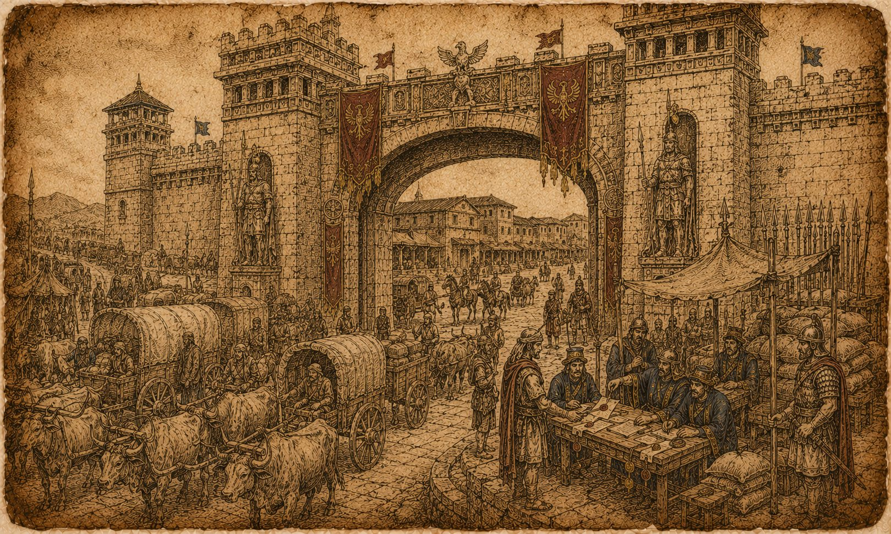
Resumo
Tanasul e uma cidade de passagem, registro e pressao. Localizada no centro-norte aquiloniano, funciona como ponto de conexao entre Tarantia, Galparan, Gunderland, Bossonian Marches e as rotas que seguem para a fronteira. Quem controla Tanasul nao controla a gloria do Imperio; controla seu movimento.
A cidade e feita de armazens, postos de pedágio, pontes, estalagens, patios de tropa, escribas cansados e oficiais que sabem que uma ordem atrasada pode matar uma guarnicao distante.
Identidade
Tanasul nao e cantada como Poitain, temida como Venarium ou admirada como Tarantia. Ainda assim, e essencial. Ela representa o Imperio como maquina: listas, selos, carrocas, cavalos de troca, mapas, cartas, suprimentos, convocacoes e soldados indo para lugares que os senadores raramente visitam.
Sua cultura urbana valoriza eficiencia, memoria administrativa e pragmatismo. Os moradores aprenderam a ouvir sotaques e identificar problemas pelo tipo de poeira nas botas.
Geografia
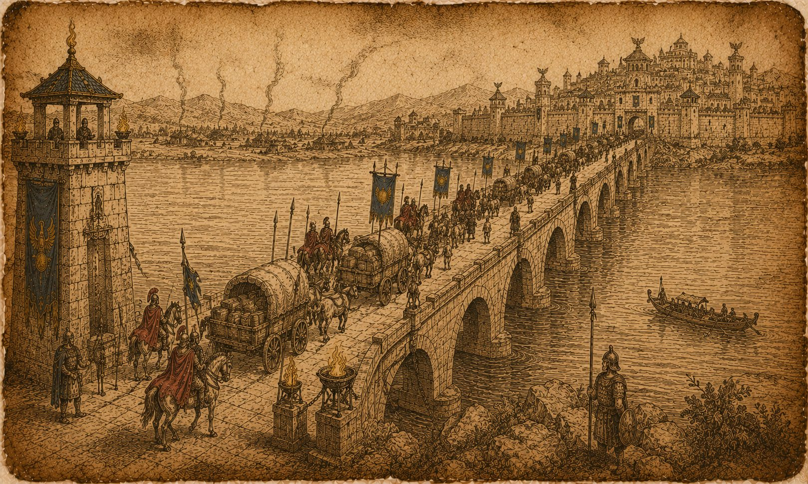
No mapa do Imperio, Tanasul aparece como um no entre regioes centrais e setentrionais. Para campanha, deve ser tratada como cidade de estradas e travessias, proxima o bastante do coracao aquiloniano para receber burocracia, mas perto o bastante da fronteira para sentir sua ansiedade.
Elementos de cena:
- portoes com filas de carrocas;
- patios de muda de cavalos;
- escritórios de licenca e selagem;
- armazens imperiais;
- tavernas de tropeiros e oficiais;
- bairro de escribas, contadores e mensageiros;
- ponte ou passagem cujo controle tem valor militar.
Governo Local
Tanasul e governada por uma combinacao de magistrados, oficiais de logistica, nobres locais e representantes comerciais. A cidade e muito sensivel a jurisdicao: quem tem autoridade sobre uma carga militar? Quem julga um crime cometido por soldado em transito? Quem paga quando uma ponte cai?
Essa ambiguidade cria aventura.
Economia
A riqueza de Tanasul vem de movimento. Hospedagem, ferraria, conserto de rodas, selaria, grao, contabilidade, letras de credito, troca de cavalos, guarda privada e armazenamento de carga sustentam a cidade.
Em tempos de crise, Tanasul se torna alvo perfeito para sabotagem. Queimar um armazem ali pode ser mais eficaz do que vencer uma batalha na fronteira.
Tensoes de Campanha
- Comerciantes querem livre circulacao; militares querem prioridade absoluta.
- Nobres locais lucram com pedágios e resistem a reformas senatoriais.
- Agentes nemedios podem tentar reorganizar a cidade segundo padroes legais mais rigidos.
- Thal-Remmon precisa de Tanasul para mover homens e suprimentos.
- A populacao se sente explorada por uma guerra que raramente chega as muralhas, mas sempre passa por seus impostos.
Estrutura de Poder e Personalidades
Tanasul e administrada por um governador-magistrado nomeado por Tarantia, mas a vida real da cidade passa por oficiais de estrada, mestres de armazem, guildas de carroceiros e familias que controlam pontes e hospedarias ha geracoes. O poder local e burocratico, militar e comercial ao mesmo tempo: quem controla registro, passagem e estoque controla a cidade.
Personalidades Publicas
- Dorian Pell: governador-magistrado de Tanasul; um homem de selos, mapas e procedimentos, convencido de que a ordem imperial depende de papel bem escrito.
- Capita Ysabet Maro: comandante da guarda de estrada; antiga escolta de comboios, respeitada pelos patrulheiros e pouco impressionada por nobres de passagem.
- Hadrus Vell: mestre dos armazens imperiais; sabe onde esta cada saco de grao, cada caixa de flechas e cada mentira nos inventarios.
- Oren Tal: correio-chefe da cidade; coordena cavaleiros, mensageiros e rotas de urgencia entre Tarantia, Galparan e Velitrium.
- Mira das Sete Contas: cambista, contrabandista ocasional e solucionadora de problemas; todos negam conhece-la ate precisarem dela.
Galparan
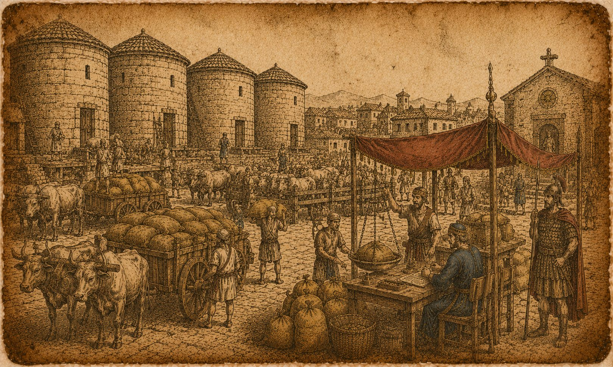
Resumo
Galparan e uma cidade de interior aquiloniano, importante menos pelo brilho e mais pela estabilidade. Campos, armazens, postos de recrutamento, pequenas casas nobres e administradores imperiais fazem dela um amortecedor entre Tarantia, Tanasul, Gunderland e as regioes de fronteira.
Se Tanasul move o Imperio, Galparan o alimenta.
Identidade
Galparan representa a Aquilonia ordinaria que sustenta a grandeza imperial. Nao e capital, nao e lenda de fronteira, nao e corte cavaleiresca: e uma cidade de celeiros, impostos, milicia, pequenas ambicoes e medo de ser esquecida ate o momento em que todos precisam dela.
Sua importancia aumenta em campanhas prolongadas. Quando o Imperio precisa manter guarnicoes no oeste e no norte, Galparan vira ponto de coleta, triagem, armazenamento e recrutamento. Isso gera riqueza, mas tambem ressentimento.
Geografia
Galparan fica em area de transicao do centro-norte aquiloniano. A regiao ao redor deve ser imaginada como mosaico de campos, pastagens, bosques, estradas secundarias, pequenas torres e vilas tributarias.
Elementos de cena:
- celeiros comunitarios e armazens imperiais;
- praça de mercado de graos e gado;
- quartel de milicia;
- casas de pequenos nobres;
- capela de Mitra com forte papel comunitario;
- escritorio de coleta fiscal;
- cemiterio de veteranos e mortos de fome antiga.
Governo Local
Galparan e governada por magistrados, familias proprietarias e representantes fiscais. Seu poder e menos teatral que o de Tarantia, mas muito mais proximo da vida comum. Um imposto novo, uma requisicao de cavalos ou um atraso no pagamento de soldados pode mudar o clima da cidade em poucos dias.
Conflitos locais:
- proprietarios contra arrendatarios;
- coletores imperiais contra aldeias endividadas;
- veteranos contra oficiais que prometem compensacoes;
- comerciantes de grao contra requisicoes militares;
- jovens recrutados contra familias que precisam deles no campo.
Economia
Galparan vive de graos, gado, farinha, couro, carrocas, pequenas forjas, armazenamento e administracao rural. Em paz, e prospera de modo discreto. Em guerra, e espremida: quanto mais o Imperio exige, mais a cidade percebe que sua lealdade virou recurso.
Cultura
A cultura local valoriza previsibilidade, respeito familiar, reputacao de trabalho e protecao comunitaria. Pessoas de Galparan desconfiam de aventureiros brilhantes, mas respeitam quem resolve problemas concretos: recuperar gado, proteger colheita, impedir abuso fiscal, trazer alguem vivo de uma estrada perigosa.
Tensoes de Campanha
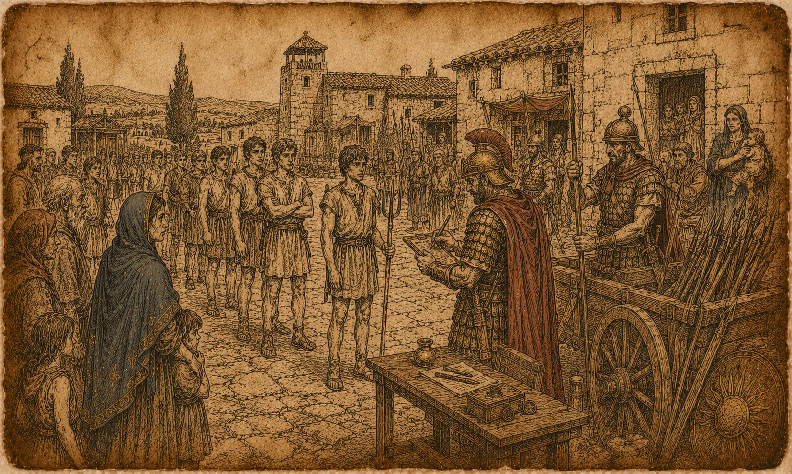
- Galparan pode virar palco de revolta fiscal se Tarantia exagerar nas requisicoes.
- Thal-Remmon precisa do abastecimento local para sustentar operacoes no oeste.
- A cidade teme ataques indiretos: sabotagem, praga em celeiros, incendio, envenenamento de poços.
- Nobres menores sonham em usar a crise imperial para ascender.
- Agentes externos podem manipular fome e abastecimento para produzir caos politico.
Estrutura de Poder e Personalidades
Galparan e governada por uma alcaide local sob supervisao fiscal aquiloniana, mas os verdadeiros poderes sao os celeiros, as familias proprietarias, a capela de Mitra e a milicia rural. A cidade nao tem uma corte brilhante; tem conselhos de colheita, audiencias de imposto e reunioes em que uma carroca atrasada pesa mais que um discurso.
Personalidades Publicas
- Corenna Mavul: alcaide de Galparan; pragmatica, cansada e popular porque costuma resolver problemas antes que virem decreto.
- Barao Ercio Valdan: maior proprietario rural da regiao; cortês em publico, implacavel quando seus campos ou vassalos sao ameacados.
- Bastian Grol: mestre-celeireiro dos armazens imperiais; conhece fome, fraude e precos melhor que qualquer senador.
- Irma Halda de Mitra: sacerdotisa comunitaria, mediadora de disputas rurais e guardia de registros de nascimento, morte e juramento.
- Saro Trigo-Negro: comprador de graos sem perguntas, meio comerciante, meio criminoso; aparece sempre que ha excedente escondido ou miseria demais.
Shamar
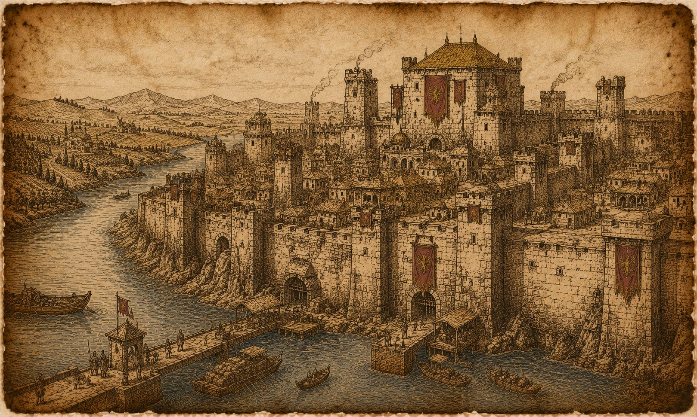
Resumo
Shamar e uma cidade antiga do sul de Aquilonia, associada ao rio Tybor e as rotas que encostam em Ophir, Koth e nas disputas meridionais do Imperio. Em Tarantia, ela costuma ser descrita como uma cidade provincial. Em Shamar, essa palavra e recebida como insulto.
A cidade guarda pedra velha, linhagens teimosas e uma cultura de resistencia. Quem domina Shamar controla uma porta para o sul; quem subestima Shamar costuma descobrir tarde demais que suas muralhas, suas familias e sua memoria foram feitas para sobreviver a invasores.
Identidade
Shamar e o sul aquiloniano em sua forma mais dura: aristocratica, armada, devota a tradicoes locais e desconfiada de qualquer decreto vindo da capital. Sua identidade combina orgulho urbano, memoria rural e uma especie de paciencia agressiva. Ela pode se dobrar diante de Tarantia, mas dificilmente se entrega a ela por inteiro.
A cidade e lembrada em tradicoes externas como alvo de campanhas de Ophir e Koth. Para Conan Legacy, isso a torna um lugar marcado por tentativas de ocupacao, pactos defensivos, familias que lucraram com guerras e ruinas que ainda funcionam como monumentos politicos.
Geografia e Posicao
Shamar ocupa uma posicao estrategica na interface entre o interior aquiloniano e o corredor sul. O rio Tybor permite movimento, comercio e guerra. Estradas secundarias levam a propriedades nobres, fortes menores, vinhedos, campos de criacao e postos de cobranca.
A paisagem ao redor e menos civilizada do que a propaganda tarantina sugere. Entre colinas, pontes antigas e vilas fortificadas, ha espaco para contrabandistas, desertores, agentes ophirianos, sacerdotes itinerantes e pequenas casas nobres que ainda se comportam como reinos privados.
Governo Local
Shamar tende a ser governada por uma aristocracia ducal ou senhorial forte, apoiada por capitães locais, escribas de linhagem e milicias urbanas. A capital exige impostos e lealdade; Shamar exige respeito e autonomia pratica.
Conflitos internos comuns:
- casas antigas contra administradores imperiais;
- oficiais tarantinos contra comandantes locais;
- comerciantes do rio contra latifundiarios;
- linhagens que defendem guerra preventiva contra Ophir contra familias que enriquecem com comercio de fronteira.
Cultura
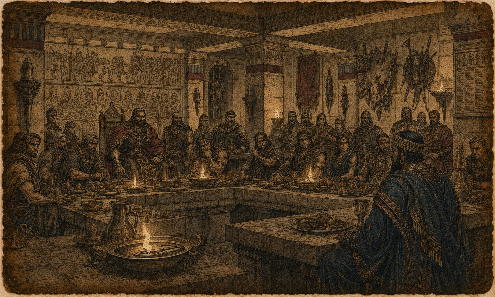
Shamar valoriza juramentos, funerais, genealogias, memoria de cerco e hospitalidade seletiva. A palavra dada por uma casa antiga pesa mais que documentos recentes do Senado. Banquetes locais misturam cortesia e ameaca: quem entende os brindes, entende a politica.
As ruas preservam santuarios, marcos de guerra e casas com pedras reaproveitadas de estruturas anteriores. A cidade parece dizer que nada desaparece de verdade; muda de dono, muda de nome, mas continua ali.
Economia
A economia de Shamar combina agricultura, pedágios fluviais, cavalos, oficinas de reparo militar, vinho, couro, guarda de mercadorias e servicos para companhias em marcha. Em tempos de tensao com Ophir ou Koth, a cidade prospera e sofre ao mesmo tempo: o dinheiro militar entra, mas tambem chegam refugiados, requisicoes e espionagem.
Estrutura de Poder e Personalidades
Shamar e uma cidade ducal: seu governo formal pertence a uma casa nobre antiga, cercada por capitães urbanos, magistrados de rio, familias mercantis e sacerdotes. O duque governa, mas so permanece forte enquanto consegue equilibrar honra local, defesa militar e comercio com vizinhos que a cidade deveria desconfiar.
Personalidades Publicas
- Duque Sestus Valcor: senhor de Shamar; orgulhoso, cerimonial e obcecado por preservar a autonomia local diante de Tarantia.
- Capita Leona Thyr: comandante da guarda dos portoes; veterana de campanhas meridionais, prefere muralhas bem guarnecidas a discursos nobres.
- Varo Dumesnil: magistrado do rio Tybor; controla licencas, barcaças, pedágios e disputas comerciais.
- Dama Saphira el-Ophiri: mercadora de origem ophiriana aceita pela elite local, mas observada por todos em tempos de tensao.
- Tullio dos Marcos Antigos: cronista, antiquario e guia de ruinas; sabe demais sobre pedras que precedem as casas atuais.
Poitain
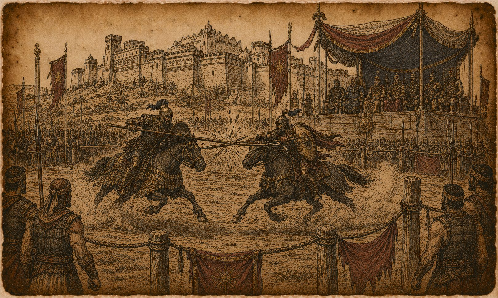
Resumo
Poitain e a provincia meridional mais rica e celebrada de Aquilonia: uma terra de campos abertos, jardins, pomares, vinhos, castelos brancos, senhores orgulhosos e cavaleiros que se veem como a flor marcial do reino. Se Tarantia e a cabeca politica de Aquilonia, Poitain e sua imagem idealizada de nobreza: honra, linhagem, cavalos, musica, violencia elegante e obediencia seletiva.
Identidade
Poitain vive de uma contradicao produtiva. Ela e profundamente aquiloniana, mas se considera especial dentro da Aquilonia. Seus nobres defendem o Imperio porque acreditam que sem eles o Imperio seria menos belo, menos nobre e menos digno de obediencia.
Na tradicao hiboriana, Poitain e associada a riqueza rural, jardins, planicies onduladas e uma cultura cavaleiresca vigorosa. Em Conan Legacy, essa imagem e preservada, mas tensionada: a provincia precisa decidir se sua honra serve ao Trono Vazio, ao Senado, a Tarantia, a propria Poitain ou a uma ideia romantica de Aquilonia que talvez ja nao exista.
Geografia
Poitain e uma terra de clima mais ameno e luminoso, com prados, bosques cuidados, vinhedos, pomares, pequenas cidades muradas e propriedades senhoriais. As estradas sao melhores que em muitas regioes do norte, mas isso tambem significa que exercitos e cobradores chegam mais rapido.
A paisagem e bonita demais para ser inocente. Cada ponte tem dono, cada vinhedo tem historia, cada castelo guarda aliados, refens, capelas e armas.
Sociedade e Governo
A provincia e marcada por casas nobres fortes, relacoes de vassalagem, cultura de torneio e um ideal de cavalaria que serve tanto para inspirar quanto para encobrir brutalidade. A honra poitaniana pode proteger camponeses contra abusos externos; tambem pode justificar vingancas privadas que atravessam geracoes.
Forcas sociais:
- grandes casas cavaleirescas, zelosas de seus brasoes;
- capelas mitraicas rurais, ligadas a patronos locais;
- ordens de cavalaria, algumas sinceras, outras politicas;
- vilas produtoras, que sustentam o luxo nobre;
- bardos e genealogistas, responsaveis por transformar violencia em tradicao.
Economia
Poitain exporta graos, vinho, cavalos, frutas, couro, madeira trabalhada, tecidos finos e homens treinados para guerra montada. A riqueza vem do campo, mas a reputacao vem da cavalaria.
O Senado depende de Poitain para prestigio e forca militar. Poitain depende do Senado para acesso a cargos, rotas e reconhecimento imperial. Essa dependencia reciproca e cheia de ressentimento.
Forcas Militares
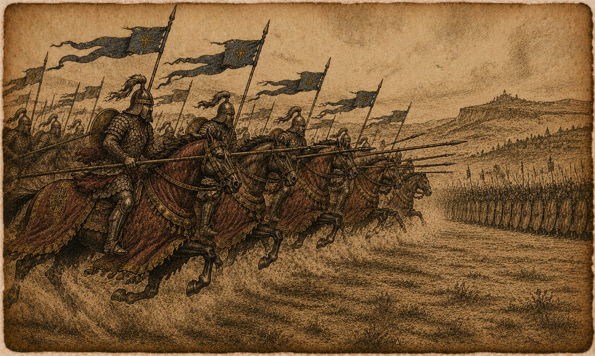
Poitain e ideal para representar a cavalaria pesada e aristocratica de Aquilonia. Seus cavaleiros sao disciplinados, orgulhosos e perigosos em campo aberto. Tambem podem ser pessimos em guerras de floresta, pantano ou emboscada, o que cria contraste com Bossonianos, Gundermen e fronteiricos.
Em mesa, um cavaleiro de Poitain deve carregar tanto esplendor quanto problema: juramentos, patronos, duelos, manutencao cara, reputacao e inimigos hereditarios.
Tensoes de Campanha
- Poitain quer preservar a nobreza aquiloniana contra a tecnocracia cultural de Corinthia e o legalismo nemedio.
- Seus cavaleiros podem ver Thal-Remmon como homem necessario ou como militar sem graca cortesã.
- Casas menores ressentem a riqueza dos grandes senhores.
- Camponeses e servos pagam o custo de um ideal cavaleiresco que fala pouco deles.
- A provincia pode se tornar fiel sustentaculo do Imperio ou berco de uma reacao aristocratica.
Estrutura de Poder e Personalidades
Poitain e governada por condes, baroes e casas cavaleirescas que reconhecem Aquilonia, mas preservam forte autonomia de costume. O poder local se organiza em torno de castelos, juramentos de vassalagem, ordens de cavalaria, capelas rurais e familias que tratam honra como moeda politica.
Personalidades Publicas
- Conde Armand de Pellia: senhor poitaniano de grande prestigio, anfitriao de torneios e defensor publico da velha nobreza aquiloniana.
- Dama Ysoria de Montclair: patrona de musica, casamentos e alianças; sua cortesia costuma anteceder movimentos politicos precisos.
- Sir Dacien Valemont: campeao de torneio e comandante de cavalaria; admirado por jovens nobres e temido por rivais que conhecem seu orgulho.
- Lucan Floril: mestre vinicultor e comerciante de luxo; suas adegas recebem mais confidencias que muitos confessionarios.
- Prior Aurel de Mitra: sacerdote rural influente, defensor da honra cavaleiresca como dever religioso.
Gunderland
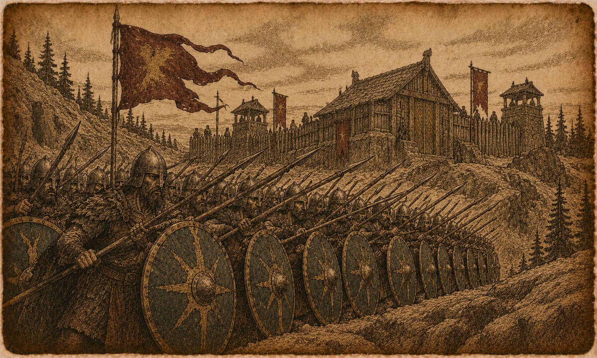
Resumo
Gunderland e a provincia setentrional de Aquilonia: uma terra de colinas, bosques ralos, vilas duras, homens altos, lanças compridas e orgulho seco. Os Gundermen sao famosos como infantaria pesada, guardas e mercenarios. Eles se consideram Aquilonios por pacto e conveniencia historica, mas nao necessariamente por submissao espiritual.
Para Tarantia, Gunderland e uma muralha humana. Para Gunderland, Tarantia e uma cidade rica que costuma esquecer quem segura o norte quando os barbaros descem.
Identidade
Gunderland preserva uma identidade hiboriana arcaica e conservadora. Fontes publicas costumam descreve-la como menos cosmopolita que Aquilonia central, mais rude, mais antiga em costumes e menos afeita ao refinamento cortesao. Em Conan Legacy, isso se traduz em uma provincia que participa do Imperio sem dissolver sua propria memoria.
Ha algo quase contratual na lealdade gundermen: eles cumprem juramentos, mas cobram respeito. Se Tarantia tenta tratar Gunderland como uma mera reserva de soldados, abre espaco para ressentimento, motins de baixa intensidade e lideres locais que falam em recuperar prerrogativas antigas.
Geografia
Gunderland e uma regiao de colinas, vales frios, matas esparsas, pedreiras, aldeias fortificadas e estradas que ficam piores no inverno. Sua posicao ao norte a transforma em amortecedor contra pressoes vindas de Cimmeria, Border Kingdom e zonas montanhosas.
A paisagem favorece infantaria disciplinada, emboscadas em passos estreitos e fortalezas pequenas, pouco glamourosas, mas extremamente dificeis de tomar sem custo alto.
Sociedade
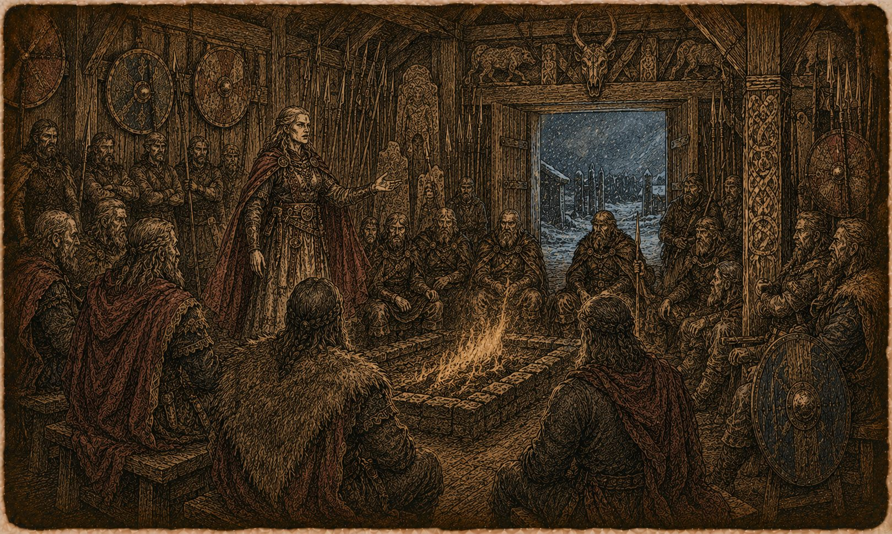
A sociedade gundermen e austera, comunitaria e hierarquica de forma diferente da aristocracia tarantina. Linhagem importa, mas utilidade militar e reputacao pessoal importam quase tanto. Um homem incapaz de ficar na linha de escudos dificilmente conserva respeito apenas por brasao.
Elementos sociais:
- aldeias fortificadas, muitas vezes organizadas em torno de saloes comunais;
- clãs e casas antigas, menos ornamentais que os nobres do sul;
- capelas de Mitra, as vezes sobrepostas a costumes religiosos anteriores;
- forjas e pedreiras, base economica e simbolica;
- companhias de lanceiros, que funcionam como instituicao de honra local.
Religiao e Memoria
Tradicoes externas indicam que Gunderland teria preservado cultos ou referencias anteriores a Mitra antes da integracao aquiloniana. Para Conan Legacy, isso permite uma tensao interessante: oficialmente Mitra ordena a provincia; informalmente, familias e vilas ainda mantem juramentos, nomes e rituais antigos que a capital tolera enquanto os impostos e soldados chegam.
Economia
Gunderland exporta ferro, pedra, madeira, pele, soldados e disciplina. A provincia nao e pobre, mas sua riqueza aparece pouco em luxo. Ela se manifesta em armas boas, muralhas bem mantidas, celeiros, cavalos resistentes e familias capazes de suportar campanhas longas.
Forcas Militares
Os Gundermen sao uma das melhores infantarias do Ocidente hiboriano: lanceiros, piqueiros, guardas de elite, homens de linha capazes de sustentar o choque enquanto cavaleiros ou arqueiros trabalham nos flancos.
Em SWADE, Gunderland sugere Extras e Wild Cards com Vigor alto, Fighting disciplinado, formacoes defensivas, Edges de Soldado/Comando e desvantagens ligadas a teimosia, conservadorismo e orgulho provincial.
Tensoes de Campanha
- Gunderland nao aceita facilmente ordens de oficiais que nunca defenderam uma passagem no inverno.
- A provincia pode se alinhar a Thal-Remmon por respeito militar, mas desconfiar de seu projeto centralizador.
- Velhas praticas religiosas podem virar pretexto para intervencao mitraica.
- Jovens gundermen voltam de guerras imperiais com ideias perigosas.
- Casas tarantinas tentam comprar regimentos; lideres locais chamam isso de corrupcao estrangeira.
Estrutura de Poder e Personalidades
Gunderland reconhece a autoridade aquiloniana, mas seu poder local passa por chefes de casa, mestres de lança, conselhos de aldeia, capelas austeras e companhias de infantaria. O governador formal precisa negociar com lideres que valorizam juramento antigo mais do que elegancia cortesã.
Personalidades Publicas
- Hadrik Tor: Mestre das Lanças de Gunderland; comandante respeitado por sua disciplina e por jamais pedir de um soldado algo que nao faria.
- Brenna Halvorn: senhora de uma casa antiga; fala pouco, paga em dia e lembra a Tarantia que pacto nao e servidao.
- Odo Gremmel: capitao de uma companhia gundermen contratada como guarda; profissional, direto e dificil de subornar.
- Madre Elswyth: sacerdotisa de Mitra que conhece velhos costumes locais e prefere acomodar tradicoes a criar martires.
- Frida Pedra-Fria: mestra ferreira e proprietaria de forja; suas lanças equipam homens que nunca pisaram em um salao nobre.
Bossonian Marches
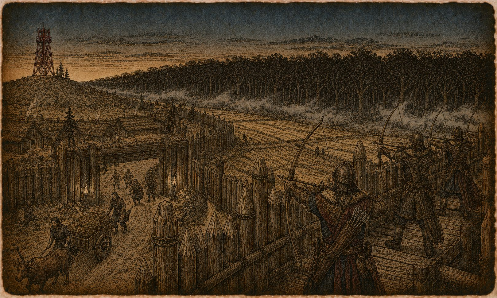
Resumo
As Bossonian Marches sao a grande fronteira ocidental de Aquilonia, entre os rios Black e Thunder e a Pictish Wilderness. Sao terras de aldeias muradas, campos trabalhados sob ameaca, arqueiros famosos, patrulhas tensas e memoria de sangue. Para a capital, elas sao o escudo do reino. Para quem vive ali, sao casa, tumulo e disputa permanente.
No cenario atual, as Marches tambem sao uma ferida politica: os Lordes Bossonianos, linhagem local misturada com Aquilonios e Cimérios, tentam consolidar dominio e integrar plenamente a regiao ao Imperio. Contra eles, tribos e comunidades que se chamam Povos da Terra reivindicam ancestralidade picta e direito anterior ao solo.
Identidade
A tradicao hiboriana apresenta os bossonianos como povo de fronteira, agricultores e arqueiros, moldados pela pressao constante de Pictos e Cimmerianos. Em Conan Legacy, isso se torna uma sociedade de vigilancia permanente. Cada crianca aprende onde correr em caso de ataque; cada colheita depende de escolta; cada casamento entre familias pode ter valor militar.
As Marches nao sao apenas uma linha no mapa. Sao uma cultura inteira feita para nao recuar.
Geografia
A regiao fica entre a Aquilonia propriamente dita e a selva/terra selvagem picta. Rios, matas fechadas, clareiras, campos, paliçadas, torres de vigia e trilhas de caca formam um territorio instavel. O mapa oficial pode mostrar fronteiras; a realidade local depende de quem patrulhou a area na ultima lua.
Elementos recorrentes:
- rios como linhas de defesa e contrabando;
- aldeias muradas com campos externos vulneraveis;
- torres de sinal em colinas e margens;
- clareiras antigas reivindicadas por Povos da Terra;
- fortalezas bossonianas erguidas sobre rotas de guerra;
- trilhas que soldados imperiais nao conhecem, mas caçadores locais conhecem bem.
Povos e Poder
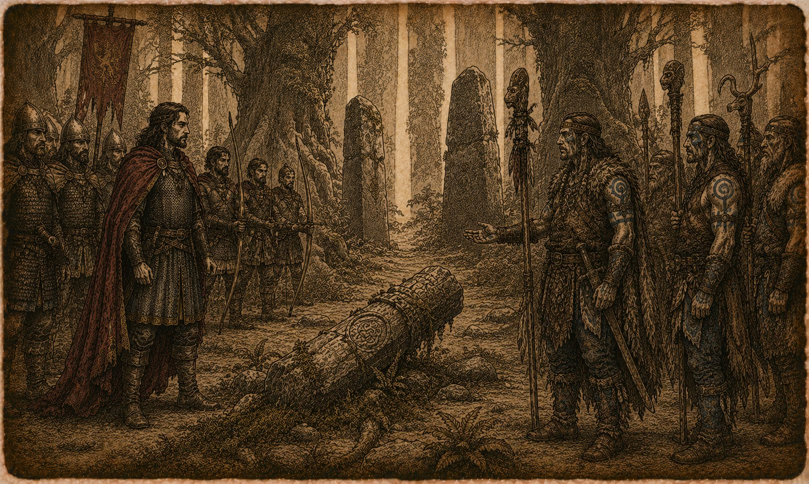
Lordes Bossonianos
Os Lordes Bossonianos sao uma elite regional nascida da guerra de fronteira. Sua legitimidade vem menos de pergaminhos e mais da espada, do arco, do casamento estrategico e da promessa de protecao. Ao se aproximarem de Aquilonia, ganharam titulos, armas, apoio juridico e acesso ao Imperio.
Povos da Terra
Os Povos da Terra se veem como descendentes de comunidades anteriores ao avanco bossoniano e aquiloniano. Para eles, a integracao imperial e uma ocupacao. Podem ser descritos pela propaganda como rebeldes ou selvagens, mas em campanha devem ter cultura, memoria, liderancas, ritos, mapas orais e razoes politicas concretas.
Colonos e Aldeoes
Entre lordes e tribos, vivem agricultores, lenhadores, pastores, batedores, ferreiros, parteiras, curandeiros e milicianos. Eles frequentemente pagam por decisoes tomadas longe: por Tarantia, por chefes pictos, por lords ambiciosos, por generais que querem gloria.
Economia
Madeira, peles, ferro simples, agricultura de subsistencia, pedágios, escoltas e soldo sustentam as Marches. A regiao nao e rica como Poitain, mas e estrategicamente indispensavel. Quem controla madeira, pontes e torres de sinal controla a sobrevivencia local.
Forcas Militares
Os Bossonianos sao conhecidos como arqueiros formidaveis, excelentes na defesa de aldeias, muralhas, clareiras e passos estreitos. Sua forca nao esta apenas no tiro individual, mas na cultura defensiva: vigia, disciplina, terreno conhecido e resposta rapida.
Em SWADE, eles funcionam bem como atiradores de elite, sentinelas, rangers de fronteira, milicia endurecida e unidades com vantagens de terreno.
Tensoes de Campanha
- A capital chama a fronteira de civilizacao; os Povos da Terra chamam de roubo.
- Lordes Bossonianos querem titulos imperiais plenos, mas nem todos aceitam obediencia a Tarantia.
- A guerra contra Pictos pode justificar abusos contra comunidades locais.
- Velitrium e Karavazyan dependem dessa instabilidade para existir como pontos de controle, comercio e violencia.
- O passado de Conan nas guerras de fronteira e lembrado de modos conflitantes.
Estrutura de Poder e Personalidades
As Bossonian Marches nao sao governadas por uma unica cidade. O poder se divide entre Lordes Bossonianos, aldeias muradas, capitães de arqueiros, chefes dos Povos da Terra, guias, familias de colonos e emissarios imperiais. A lei formal vem de Aquilonia; a obediencia real depende de quem protege a paliçada quando a mata se move.
Personalidades Publicas
- Lorde Branoc Vell: senhor bossoniano de linhagem misturada; quer reconhecimento pleno no Senado e terras legalizadas sob titulo imperial.
- Maira do Rio Negro: mediadora dos Povos da Terra; caçadora, negociadora e voz publica contra a expansao dos lordes locais.
- Alaric Setafirme: capitao de arqueiros de fronteira; respeitado por colonos e temido por quem atravessa clareiras sem permissao.
- Ewan das Paliçadas: lider de aldeia murada, homem simples com autoridade pratica maior que a de muitos nobres ausentes.
- Sira Folha-de-Ferro: herbalista, guia e contrabandista; caminha entre aldeias bossonianas e trilhas dos Povos da Terra.
Venarium
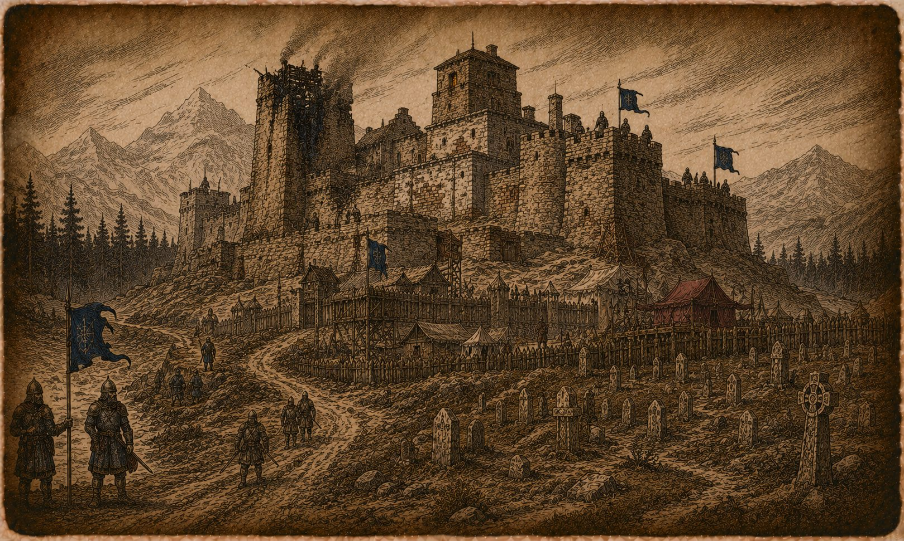
Resumo
Venarium e uma fortaleza de fronteira no imaginario aquiloniano, erguida como afirmacao de dominio sobre terras duras demais para aceitar facilmente qualquer bandeira. Para muitos Aquilonios, ela e simbolo de coragem colonizadora. Para muitos Cimérios, e memoria de invasao. Para Conan Legacy, Venarium e uma ferida que nunca cicatrizou direito.
No periodo atual, a tomada e reorganizacao de Venarium por Thal-Remmon transformou a fortaleza em prova viva de sua eficacia militar. Ele nao apenas conquistou pedra; conquistou narrativa.
Identidade
Venarium nao e uma cidade confortavel. Sua funcao historica e politica supera sua escala urbana. Ela existe como marco de fronteira, provocacao, trauma e vitrine militar. Todo mapa que a inclui esta fazendo uma afirmacao: Aquilonia chegou ate aqui.
A tradicao sobre Conan associa Venarium a juventude do cimerio e as guerras de fronteira contra avancos aquilonianos. Em Conan Legacy, um seculo depois, o lugar carrega essa sombra: soldados falam de Conan como mito, inimigos falam dele como vinganca, oficiais falam dele como problema de propaganda.
Geografia
Venarium fica voltada para a fronteira norte, em area onde estradas imperiais perdem confianca e montanhas, florestas frias e trilhas de guerra passam a ditar a realidade. A fortaleza deve ser descrita como pedra, lama, vento e vigia.
Elementos de cena:
- muralhas reparadas varias vezes;
- fossos ou declives naturais;
- paliçadas externas para trabalhadores e refugiados;
- torres com sinais de incendio antigo;
- cemiterios militares;
- capela austera de Mitra;
- ruinas ou fundacoes de estruturas queimadas na primeira queda.
Governo e Ocupacao
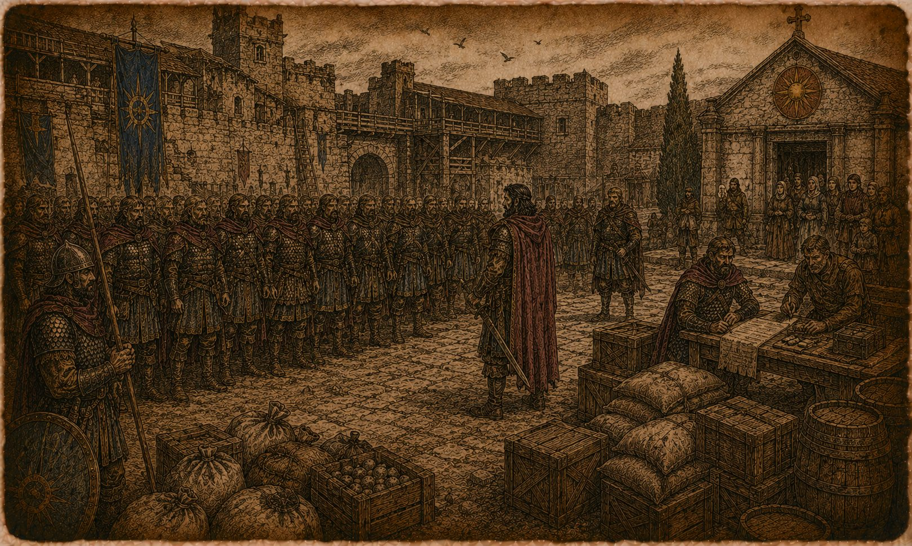
Sob influencia de Thal-Remmon, Venarium funciona como posto avançado, laboratorio de disciplina e demonstracao de governo militar. A ordem ali e eficiente, mas pesada. Registros, patrulhas, turnos, punicoes, mapas e estoque sao tratados como questoes de sobrevivencia e legitimidade.
Forcas locais:
- comando da fortaleza, leal a Thal-Remmon;
- veteranos da retomada, com status especial;
- trabalhadores reassentados, alguns voluntarios, outros empurrados por dividas ou decretos;
- batedores cimerios assimilados ou contratados, nunca plenamente confiaveis aos olhos dos oficiais;
- agentes senatoriais, enviados para medir se a fortaleza serve ao Imperio ou ao homem que a tomou.
Cultura
Venarium vive em regime de lembranca armada. Ha festas oficiais comemorando a retomada, mas tambem silencio entre familias que perderam gente. Os moradores aprendem a falar com cuidado: uma palavra errada pode soar como simpatia por Cimmeria, insulto a Aquilonia ou critica a Thal-Remmon.
A cultura local mistura colonos, soldados, fronteiricos, sobreviventes, comerciantes oportunistas e gente sem lugar em outras provincias. E um bom lugar para personagens que tentam recomeçar e pessimo para quem quer esquecer.
Tensoes de Campanha
- Thal-Remmon usa Venarium como medalha politica.
- Tarantia teme que a fortaleza responda mais ao general que ao Senado.
- Cimérios veem o local como cicatriz e provocacao.
- Colonos comuns so querem viver, mas sua presenca e politica.
- A memoria de Conan pode incendiar tanto rebeldes quanto lealistas.
Estrutura de Poder e Personalidades
Venarium e uma fortaleza ocupada por narrativa militar. O comando de fato gravita em torno de Thal-Remmon e de seus oficiais, enquanto magistrados civis, sacerdotes e colonos tentam transformar posto de guerra em cidade viavel. A autoridade ali nasce de conquista, abastecimento e medo de novo colapso.
Personalidades Publicas
- Thal-Remmon: senhor de fato de Venarium e comandante associado aos Shadow Lions; figura de ordem, ambicao e eficiencia militar.
- Ser Kaul Morvan: castelao da fortaleza; supervisiona muralhas, disciplina interna e relatorios enviados a Tarantia.
- Mira Kord: lider de colonos reassentados; defende mercados, moradias e a sobrevivencia de quem nao veste armadura.
- Bragan Cinza: batedor cimerio contratado; tolerado por utilidade, observado por todos e raramente convidado a sentar-se perto do fogo.
- Padre Osric de Mitra: sacerdote austero da capela da fortaleza; tenta dar forma moral a uma ocupacao que muitos preferem nao discutir.
Velitrium
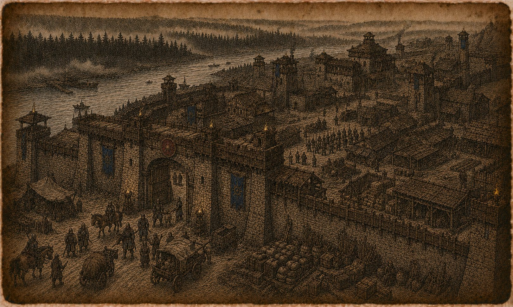
Resumo
Velitrium e uma cidade-fortaleza na borda ocidental do mundo aquiloniano, voltada para a Pictish Wilderness e para as tensoes das Bossonian Marches. E menos brilhante que Tarantia, menos nobre que Poitain e menos antiga em orgulho que Gunderland, mas talvez seja mais honesta que todas elas: Velitrium existe porque a fronteira mata quem dorme.
No periodo atual, a cidade e um dos centros de poder de Thal-Remmon e de seus aliados. Suas muralhas, patrulhas, armazens e conselhos militares transformam o medo da fronteira em politica imperial.
Identidade
Velitrium e pratica, cinzenta e armada. A cidade nao tem paciencia para discursos longos sobre civilizacao se o orador nao sabe diferenciar neblina de fumaça de ataque. Sua cultura mistura disciplina militar, comercio de fronteira, paranoia justificada, oportunismo e lealdades pessoais.
A narrativa oficial a chama de bastiao. Os moradores sabem que bastioes tambem sao sacrificaveis.
Geografia
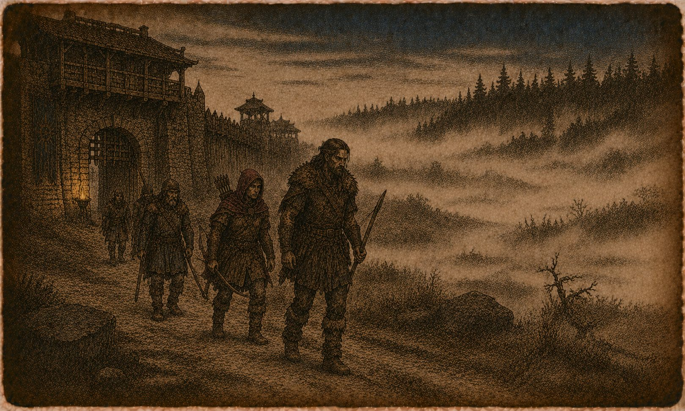
Velitrium fica no sistema ocidental de defesa aquiloniana, conectada a rios, estradas militares, aldeias bossonianas, postos de patrulha e rotas para regioes disputadas. O terreno em torno combina mata, clareiras, zonas pantanosas, linhas de torre e caminhos que mudam conforme estacao, guerra e incendio.
A cidade deve ser imaginada como um no logistico:
- muralhas e portoes com trafego controlado;
- estalagens cheias de patrulheiros, caçadores e mercadores nervosos;
- armazens de flechas, sal, grao, corda e madeira;
- patios de treinamento;
- enfermarias militares;
- templos pragmáticos, onde oracoes soam como relatorios de baixa.
Governo Local
No material local, Velitrium ja aparece associada a uma estrutura de comando e a personagens como Edran, Caelan e Maeryn, alem da sombra politica de Thal-Remmon. A cidade deve funcionar como centro de decisao militar regional, nao apenas como povoado de fronteira.
Instituicoes sugeridas:
- Conselho de Defesa: oficiais, nobres locais, representantes de armazens e sacerdotes.
- Guarda das Muralhas: soldados permanentes, treinados para cerco e patrulha.
- Companhias de Batedores: fronteiricos, bossonianos, cimerios assimilados e guias contratados.
- Casa de Registro: controla entrada, saida, mortes, recompensas e requisicoes.
- Enviados de Thal-Remmon: observam, aconselham e, quando necessario, substituem autoridades.
Economia
Velitrium vive de guerra, abastecimento e risco. Ela compra grao, madeira, ferro, cavalos, mapas, informantes, couro, ervas, curandeiros e silencio. Tambem vende protecao, passagem, licencas, recompensas e oportunidades.
Em paz, a cidade empobrece. Em guerra, enriquece e sangra. Essa dependencia cria personagens moralmente ambíguos: comerciantes que lucram com conflito, soldados que temem a paz, oficiais que exageram ameacas para manter recursos.
Relacoes Regionais
- Bossonian Marches: fonte de arqueiros, aldeias vulneraveis e disputas politicas.
- Povos da Terra: inimigos, vizinhos, negociadores e vitimas, dependendo da historia contada.
- Karavazyan: ponto movel de comercio, informacao e contrabando, util demais para ser ignorado.
- Tarantia: financia, cobra e compreende pouco.
- Thal-Remmon: ve Velitrium como prova de que ordem militar e mais eficaz que retorica senatorial.
Estrutura de Poder e Personalidades
Velitrium funciona como cidade-fortaleza. Seu poder formal passa por autoridades de Marca e por representantes imperiais, mas a autoridade cotidiana pertence a quem controla muralhas, patrulhas, armazens e informacao de fronteira. A cidade tem magistrados, mas seu pulso real e militar.
Personalidades Publicas
- Edran Verden: Warbaron de Velitrium; tradicionalista, duro e respeitado por tratar a defesa da fronteira como dever sagrado.
- Caelan Verden: herdeiro designado de Edran; honrado, rigido e visto como continuidade militar da casa.
- Maeryn Verden: estrategista da familia, brilhante e subestimada por tradicoes sucessorias; muitos oficiais buscam sua opiniao antes de agir.
- Capitao Sorren Veyr: comandante das patrulhas externas; conhece a fronteira pelo cheiro da lama e pela direcao do silencio.
- Nessa Barro: intendente dos armazens; controla comida, flechas, botas, pagamento e ressentimento de tropa.
Karavazyan
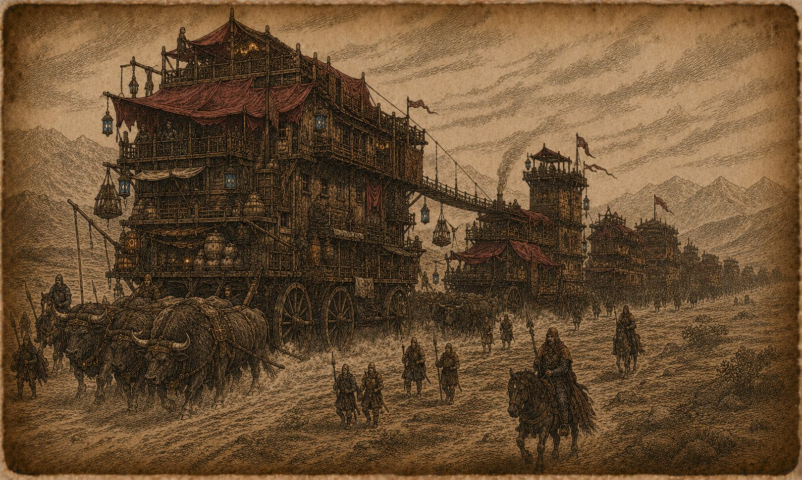
Resumo
Karavazyan e a cidade sobre rodas: mercado, caravana, fortaleza movel e ponto de encontro entre rotas aquilonianas, fronteiras bossonianas e interesses que preferem nao deixar residencia fixa. A cidade existe porque a autoridade imperial chega tarde demais a certos lugares, e porque comercio, informacao e sobrevivencia precisam continuar se movendo.
Karavazyan nao pertence inteiramente a Tarantia, Velitrium, Venarium ou aos Povos da Terra. Ela negocia com todos, deve favores a muitos e sobrevive porque ninguem consegue dispensa-la sem perder algo.
Essencia
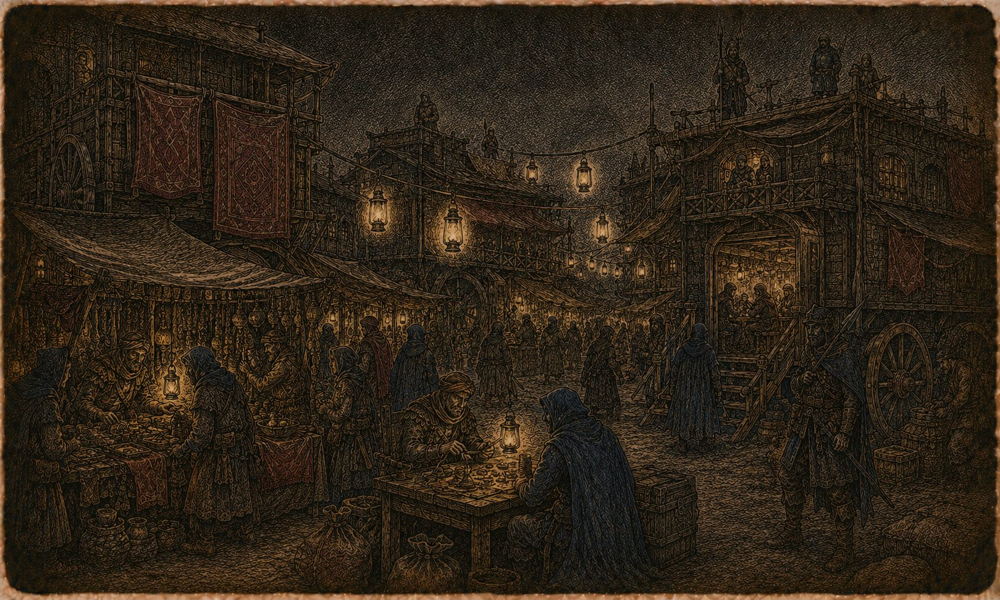
Karavazyan e menos uma cidade tradicional e mais um organismo de rodas, tendas, carrocoes, oficinas, tavernas, guardas e pactos. O visitante encontra cheiro de couro, graxa, especiarias, fumaça, animais, comida quente e medo cuidadosamente disfarçado de oportunidade.
Ela atrai mercadores, desertores, caçadores, estudiosos, artistas, informantes, curandeiros, agiotas, refugiados e gente que precisa desaparecer sem abandonar o mundo.
Regiao e Funcao
Karavazyan opera nas rotas entre Venarium, Tanasul, Velitrium e as Marchas. Por isso, funciona como ponte entre a ordem imperial e os lugares onde essa ordem vira negociacao. Quem passa por Karavazyan pode comprar mapas, contratar escolta, ouvir rumores, trocar moeda, vender carga, procurar cura ou desaparecer por algumas noites.
Estrutura de Poder
Karavazyan nao possui prefeito fixo no sentido aquiloniano. A cidade e governada por circulos de autoridade: donos de caravanas, mestres de roda, casas mercantes, guardas contratados, mediadores, sacerdotes discretos e faccoes que fingem ser apenas negocios. O poder pertence a quem consegue manter movimento, alimento, protecao e segredo circulando.
Personalidades Publicas
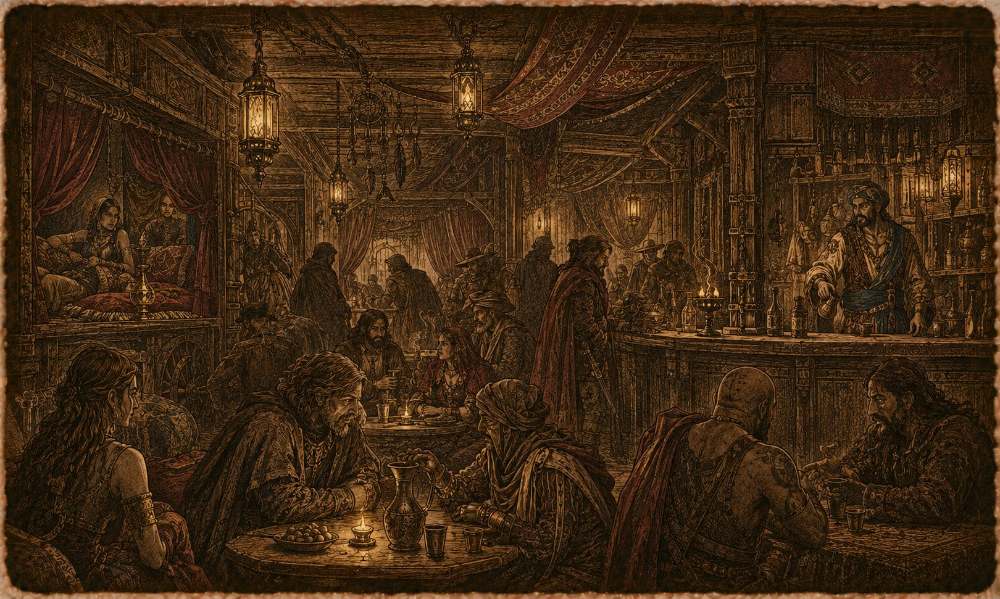
- Sommarel: proprietario da Casa da Areia e da Sombra; taverneiro, patrono, informante e eixo social para viajantes que precisam negociar sem chamar a guarda.
- Narzim ibn Haroud: mercador de longa distancia; conhecido por trazer mercadorias raras, noticias incompletas e favores que sempre vencem no pior momento.
- Ali al'Farrad: negociador e homem de rua; fala com guardas, carregadores, artistas, devedores e gente que nunca entra em saloes formais.
- Kethryll: figura associada a sonhos, pressagios e protocolos oniricos; tem reputacao ambigua entre supersticao, cura e perigo.
- Dama Veyra das Rodas Altas: administradora de contratos de deslocamento; controla agendas, reparos, animais, rodas e a logistica que impede a cidade de morrer parada.
Cultura Publica
Em Karavazyan, hospitalidade e contrato se confundem. Quem paga, negocia ou traz novidade encontra lugar. Quem quebra palavra pode acordar sem mercadoria, sem escolta ou sem nome. A cidade valoriza adaptacao: sotaques se misturam, religioes se toleram enquanto nao atrapalham negocios, e a reputacao viaja mais rapido que qualquer carroça.